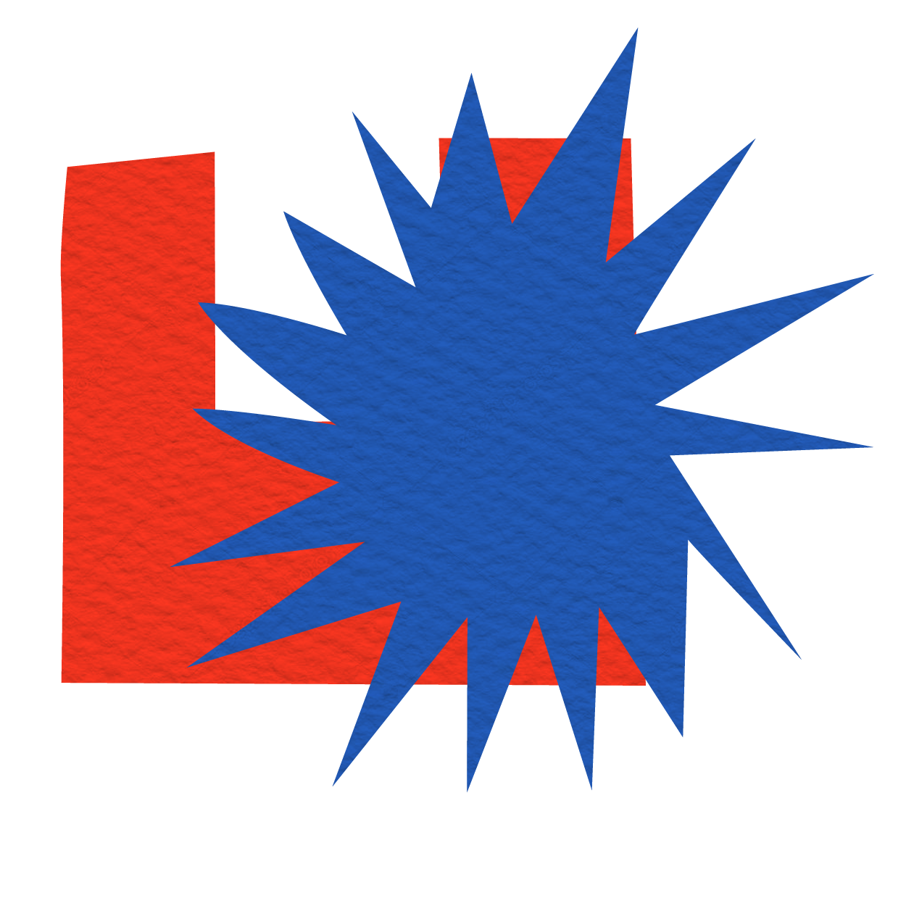
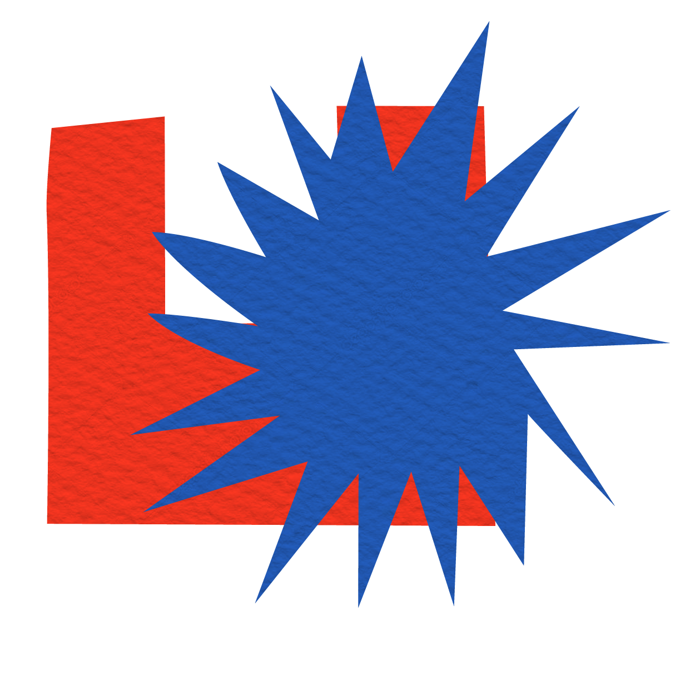
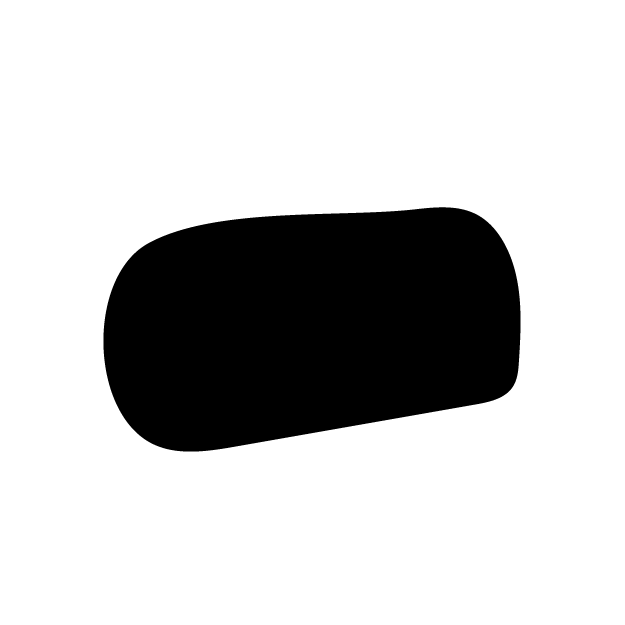

Alessia La Rocca
Bluebeard
What happens when you break down a fairy tale and put it back together in a different order? Bluebeard is the story of a bad man who tricked his wives with a bewitched key to kill those who disobeyed him. His last wife managed to escape from him, and his brothers killed him. Afterwards, she lived happily ever after with her lovely new husband. In this project, the elements, divided into paragraphs, are represented by abstract illustrations describing the scene. The user can rearrange them, giving life to a new story.
{kind=link}
Object
Disassembled object
 

WEB PLATFORM
The website subdivides Bluebeard's fairytale and the user navigates by reading it at first following the order of events. The page is surfable through the camera and uses the image recognition of Google Teachable Machine.
After activating the shuffle it is possible to read the story with a new order, this to see if it can also make sense with another sequence.
SHUFFLE
By showing the camera the shuffle symbol, the elements change order randomly.
ZOOM IN
Each illustration leads to the part of the story with the corresponding symbol.
PREVIOUS
The 'previous' symbol navigates between elements by loading the previous page. Holding it in place changes the page every two seconds, it is possible to remove it from the camera in order to have more time to read.
NEXT
The 'next' symbol has the same function as 'previous' but navigates forward.
PROCESS
The illustrations were created by subdividing the story into paragraphs and representing the scene in an abstract manner.
The shapes are constructed according to the content, for example, when Bluebeard delivers the keys, the bewitched one is the only one different from the others, and when it is stained with blood the shape changes irreversibly.
These are printed in order to interact with the website.
Download the printable A3 file here.
After creating and printing the illustrations, the Google Teachable Machine was trained using the image recognition function. Machine learning was implemented within the site in order to match the created labels to user interactions. Each symbol has approximately 1400 samples in order to make the recognition as accurate as possible.